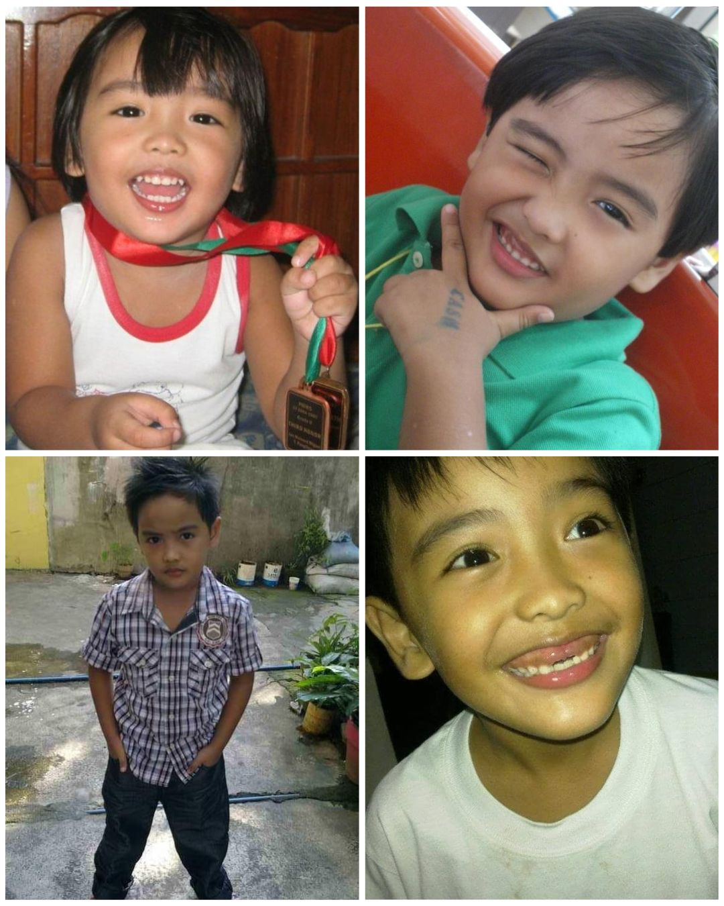
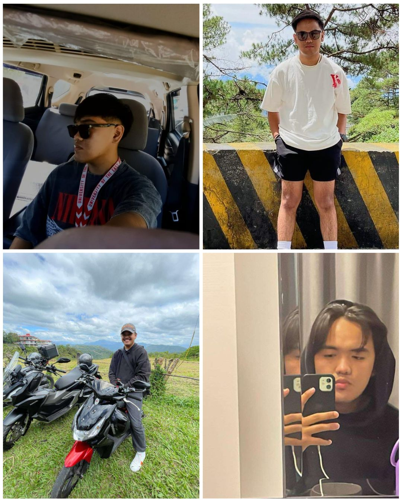

Childhood Years:

Hello, everyone!1 I am Myles Joaquin T. Pangilinan.2 I am a 20-year-old IT student
from the University of the East-Manila. 3 I was born and raised in Quezon City and my
childhood was colorful. 4 I am blessed enough to be able to live with both of my parents
under the same roof and to be guided by them. 5 Being able to grow around my family has
taught me a lot of things, it taught me how to love, how to be strong, and how to not
give up. 6 Being around with my uncles, cousins, and auntie made me the person that I
am today, and I wouldn’t change one bit of my childhood. 7 Looking back at my childhood
made me realize how simple life was and how much I want to go back. 8 Riding bikes and
playing with my friends is all that I cared about. 9 I remember that we were not allowed to
go outside until 4pm as it was still hot and every time, we tried to sneak out we always
got scolded by our parents.10 My friends were also a big part of my life as they taught me
how to handle myself outside our home and taught me how to socialize.11 As a child, I
always thought of myself as playful as I always try to make everyone around me laugh.12
Another thing about me is I am an overprotective brother; my sister tends to get irritated
because of it but I guess that’s just how I was raised by my dad.13 But of course, as I was
just a kid, there were times that I’ve done things that would’ve got me in trouble if my
parents found out.14 I was a stubborn kid as I used to ring the doorbells of other people’s
houses and run with my friends.15 Although it was wrong, it brought joy and laughter to
us.16 I also got into a lot of fights in my elementary days because of petty things. .17 My
parents got a lot of calls from my school because of my behavior but I have no regrets
because it was something that I had to go through to be a better person.18 I had a lot of
dreams as a child and the one dream that I will do my best to achieve is to be able to
help my family.19 As I entered my teenage years, everything changed because my
childhood friends also needed to live their own lives.20
Teenage Years:
Entering my teenage years, I was excited because I was getting more freedom
than I had when I was in elementary school.1 Thus, in my early teenage years, it was hard
for me to make friends.2 I was shy and scared to be judged.3 Nevertheless, it went okay.4
I found friends that I still have to this day, and I know that I’ll have them for the rest of
my life.5 High school was fun and all, but it can also be hectic as there was a lot of issues
lingering and students’ where I studied had high egos.6 Although it was fun and all, I also
had my downfalls.7 Just like my elementary days, I also got into a lot of trouble due to
personal reasons.8 Since my mom was working abroad by this time, my dad got called a
lot again for the troubles that had come my way.9 Even though there were times that I
was wrong, my dad always saw the right thing in me.10 Don’t be mistaken, I got scolded
but my dad talked to me calmly and always told me to try to be better.11 During my
teenage, years I’ve discovered a lot of things that I didn’t knew I had in me.12 I’ve done
things that I will carry for the rest of my life.13 During my teenage years I also realized how
strong I am as a person to be able to go through those difficult times and to try and
always look on the brighter side.14 Being a teenager, my curiosity led to a lot of experiences,
some bad and some good.15 As a teenager, I learned how to drink, how to smoke, and
how to vape even though it was wrong, I found peace doing such things.16 When my dad
found out that I already knew how to drink he didn’t get mad.17 He taught me how to carry
myself if ever I drank outside our premises, and he taught me to always protect myself
when I am in such places.18 My teenage years were full of ups and downs, but it was full
of learnings.19 I will never regret every experience and mistakes that came down on my
path.20
College Years:

Then adulthood came.1 I learned to drive and to handle things that I didn’t realize that I’d be facing at an early stage.2
And learning that new skill of mine helped me cope up with the challenges that came.3 I admit, becoming a young adult is not easy.4
When I entered my adulthood, it struck me.5 I realized that this is the time that I should focus on being able to have a secure future.6
I was scared because I wasn’t sure yet about what career path I should take.7 I realized that becoming an adult comes with responsibilities that you should be
strong enough to survive.8 But then I knew I was strong enough to handle the odds that I may face.9 I suddenly believed the saying
“Shit happens” because it really does.10 There were a lot of tough times that I and my family faced, and I knew I had to be strong for myself and my siblings
because all we have is each other.11 Entering adulthood without knowing what career I really want was the only thing that gave me a tough time.12
But then, life goes on.13 I researched and I decided to enroll as an IT student.14 It was hard for me to love this program, but I had no other
choice.15 Having said that, I do side hustles to provide for myself sometimes and it’s something that I enjoy doing when there’s no classes.16
Yes, it is hard at times but if I’m happy I don’t mind doing it.17 I know that my story is full of ups and downs, but I know that makes me who I am.18
Adulting is hard but it’s where more opportunities could open for me.19 Adulting is confusing but I just needed to find what I want and who am I doing it for.20